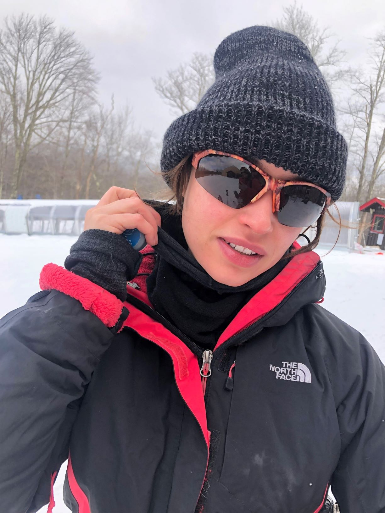

The Jelly Page

First let me say Jelly is a total Ski Bunny. Smart. Creative. Cool as fuck. Fun as fuck.
OMG I cant even look at her band Alien Bay's music video, but you can...check it ...HERE
Oh hey also check out the Alien Bay official website here --> alienbaystation.com
Ideas Jelly and I are working on together:
J + A #1 Biological Synchronicity - The idea that a connection can be synchronized to a biological level. 1 + 1 = 1 The idea that two people can make one better more beautiful thing
J + A #2 - the connection between one's own injustices they have faced, curiosity, multifaceted viewpoints, forgiveness, and a commitment to helping better the lives of those who feel injustice.
In the depth of one's suffering of an injustice one can decided to be curious about the injustice. With multifaceted viewpoints, one begins to see a range of perspectives that help explain why an injustice occurred and provide the blueprint for forgiveness. Understanding the cycle of injustice in one's personal life thus provides an opportunity to help others facing injustices via sharing structural knowledge regarding injustice gained a posteriori and the empathic strength one has gained from experiencing the injustice.
J + A #3 - The Diologue Between OKFORU, point #104 Lovers -> Be who they want you to be, and point #138 Give them what they want /need
Jelly came up with the idea of OKFORU - which is basically the action of asking "Is it OK FOR U if I ___?" which is a very important question in budding romances and is related to my ideas #104 and #138 in that by asking if it is ok for u if you do something is akin to making sure that you only do what your lover wants, that you only are who your lover wants you to be.
Words we like:
Superfluous - unneeded, extra, unnecessary
Tyro - A novice
Ashen - Pale AF
Salubrious - Healthy
Equivocal - Ambiguous or having more than one interpretation (used less these days maybe because it doesnt sound like what it means)
Specious - Seemingly correct, but actually wrong
Here are some ideas I want to discuss with Jelly:
138) Give em what they want/need
115) Focus on what Blinds You (with its Beauty, Brilliance, and Feeling) Focus on the illest things and be set free again.
Update 2-19-19 Daaaaamn but what if the person is a super cutie. Can that blinding physical beauty blind you? Run from feelings if they may distract from your own inner brilliance?
111) Reel it IN, Compose Yrr Self (((Let ME HELP))) I got a lot of tricks to keep me self-focused and free of stress. Let’s do a spa day (TURKISH BATH).
104) LOVERS -> B what they want U 2 B In the sense you know…that it’s probably not that hard for you to act that way or they wouldn’t be your LOVER in the first place.
101) TEAMWORK -> AT ALL COSTS TEAM WORK dats da shit yo… You can get so much done!
89) DISCIPLINE -> FEEL IT - That you should really feel the urges suppressed to really feel discipline to really discipline yourself. Does it also mean making yourself feel pain?
84) Pick 3: 1) Supportive 2) Fun 3) Smart 4) Kinky = My Ideal Lover
Fo real….a lover that has any of those 3 characteristics is ideal. REALLY REALLY Fun Sex is great. Supportive Sex…crying the whole time telling each other you love each other…mmmm…saying words that shatter each other’s worlds as you make love…yessss…..and ya know dirty kinky sex, why not?
82) Re-Prioritize – Are those Ducks really in a row?
Like watch yourself evolve into a youuu that is twice as gooood when you get those ducks rolling straight thruuuuu.
77) Root out Negativity
Like Missy Elliot says “Let me search it, put my thing down flip it and reverse it.”
To root out negativity you gotta search for it in one way then put your thing down flip it and reverse it to really find that source of negativity and root it out…like really root it out.
69) Reset Percentage
I love this idea. It’s that we can find a base level. It’s that we can recover. It’s that no matter how shitty life is, there are things we can do to make up for the trauma we endure. It’s that we can feel our stress and feel our bodies trying to battle that stress.
The basic idea is that at any given time we feel like we are in that like new feeling to a certain percentage. For example, if you are feeling totally refreshed and at your best you feel 100% reset.
64) Endlessly Release Repeat (ERR w/ the Maximization of Beauty)
I can’t even say yo…but if I was to say…I’d release your beauty like a butterfly fluttering fragile its death so certain. Then repeat that same beauty repeating endlessly like those flapping wings.
That’s to say that there are moments in time that just do that in our hearts anyways. There are people that just do that in our hearts every time we see them. Let the weight of that beauty crush you…again and again.
35) Dating - The Best: So biological • The worst: so distracting from the Higher Self
Update -2-19-19 – Biological as in even more than productive psychological even more than symbiotic psychologically. Past psychological what is there? Biological symbiosis. Eating better together. Being more productive together, not because of something the other person says just like on level of existence that isn’t just some sort of everyday assistance. Sort of like the indescribability of love. Helping someone else in its purer forms is indescribably beneficial and beautiful.
36) Higher - More Productive Healthier Self - The process of creating a symbiosis between productivity and health. There are times when we are living in a very productive want and also maintain great physical and mental health. Many associate this with a stable living situation, but what the idea that variety is the spice of life?
12) - Foucault - Silence /friends - Foucault talks about the different types of silences. Harsh vs. pleasant silences that extend throughout the day between friends. More on friends later.
1 maximize the beauty - fully channel the beauty with in. Maybe ask what makes this moment beautiful? See if beauty can be increased in every situation. MtB also could be taken as a use of reason and also a disciplining of the senses to focus on beauty (i.e. all the pretty flowers, all the pretty birds).
2 full expression - it takes a lot of effort for one to understand who they are when they are comfortable and how to channel the most real expressions of themselves what holds people back? Shyness, distraction (inability to focus on that which they want express)
Philosophers Adam wants to discuss with Jelly:
Pyrrho -His Wiki HERE
Epictetus -His Wiki HERE